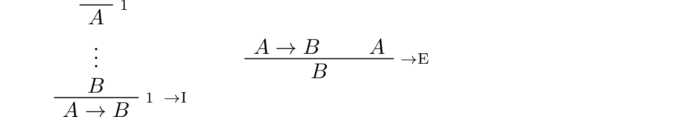
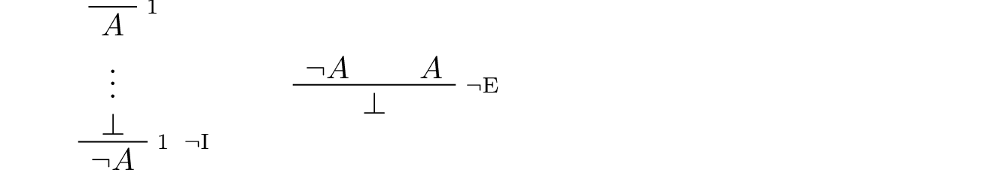
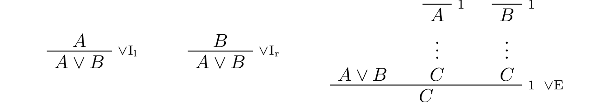
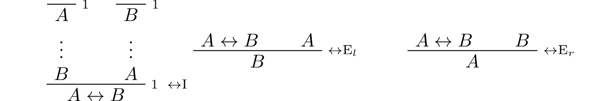
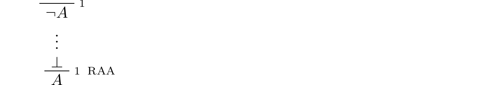
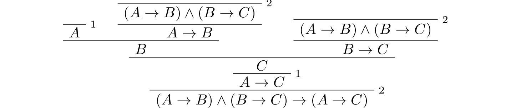
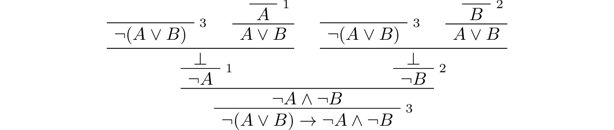
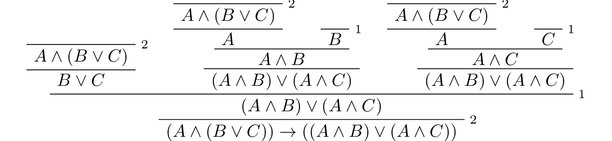

3. Natural Deduction for Propositional Logic¶
Reflecting on the arguments in the previous chapter, we see that, intuitively speaking, some inferences are valid and some are not. For example, if, in a chain of reasoning, we had established “\(A\) and \(B\),” it would seem perfectly reasonable to conclude \(B\). If we had established \(A\), \(B\), and “If \(A\) and \(B\) then \(C\),” it would be reasonable to conclude \(C\). On the other hand, if we had established “\(A\) or \(B\),” we would not be justified in concluding \(B\) without further information.
The task of symbolic logic is to develop a precise mathematical theory that explains which inferences are valid and why. There are two general approaches to spelling out the notion of validity. In this chapter, we will consider the deductive approach: an inference is valid if it can be justified by fundamental rules of reasoning that reflect the meaning of the logical terms involved. In Chapter 6 we will consider the “semantic” approach: an inference is valid if it is an instance of a pattern that always yields a true conclusion from true hypotheses.
3.1. Derivations in Natural Deduction¶
We have seen that the language of propositional logic allows us to build up expressions from propositional variables \(A, B, C, \ldots\) using propositional connectives like \(\to\), \(\wedge\), \(\vee\), and \(\neg\). We will now consider a formal deductive system that we can use to prove propositional formulas. There are a number of such systems on offer; the one will use is called natural deduction, designed by Gerhard Gentzen in the 1930s.
In natural deduction, every proof is a proof from hypotheses. In other words, in any proof, there is a finite set of hypotheses \(\{ B, C, \ldots \}\) and a conclusion \(A\), and what the proof shows is that \(A\) follows from \(B, C, \ldots\).
Like formulas, proofs are built by putting together smaller proofs, according to the rules. For instance, the way to read the and-introduction rule
is as follows: if you have a proof \(P_1\) of \(A\) from some hypotheses, and you have a proof \(P_2\) of \(B\) from some hypotheses, then you can put them together using this rule to obtain a proof of \(A \wedge B\), which uses all the hypotheses in \(P_1\) together with all the hypotheses in \(P_2\). For example, this is a proof of \((A \wedge B) \wedge (A \wedge C)\) from three hypotheses, \(A\), \(B\), and \(C\):
In some presentations of natural deduction, a proof is written as a sequence of lines in which each line can refer to any previous lines for justification. But here we will adopt a rigid two-dimensional diagrammatic format in which the premises of each inference appear immediately above the conclusion. This makes it easy to look over a proof and check that it is correct: each inference should be the result of instantiating the letters in one of the rules with particular formulas.
One thing that makes natural deduction confusing is that when you put together proofs in this way, hypotheses can be eliminated, or, as we will say, canceled. For example, we can apply the implies-introduction rule to the last proof, and obtain the following proof of \(B \to (A \wedge B) \wedge (A \wedge C)\) from only two hypotheses, \(A\) and \(C\):
Here, we have used the label 1 to indicate the place where the hypothesis \(B\) was canceled. Any label will do, though we will tend to use numbers for that purpose.
We can continue to cancel the hypothesis \(A\):
The result is a proof using only the hypothesis \(C\). We can continue to cancel that hypothesis as well:
The resulting proof uses no hypothesis at all. In other words, it establishes the conclusion outright.
Notice that in the second step, we canceled two “copies” of the hypothesis \(A\). In natural deduction, we can choose which hypotheses to cancel; we could have canceled either one, and left the other hypothesis open. In fact, we can also carry out the implication-introduction rule and cancel zero hypotheses. For example, the following is a short proof of \(A \to B\) from the hypothesis \(B\):
In this proof, zero copies of \(A\) are canceled.
Also notice that although we are using letters like \(A\), \(B\), and \(C\) as propositional variables, in the proofs above we can replace them by any propositional formula. For example, we can replace \(A\) by the formula \((D \vee E)\) everywhere, and still have correct proofs. In some presentations of logic, different letters are used for propositional variables and arbitrary propositional formulas, but we will continue to blur the distinction. You can think of \(A\), \(B\), and \(C\) as standing for propositional variables or formulas, as you prefer. If you think of them as propositional variables, just keep in mind that in any rule or proof, you can replace every variable by a different formula, and still have a valid rule or proof.
Finally, notice also that in these examples, we have assumed a special rule as the starting point for building proofs. It is called the assumption rule, and it looks like this:
What it means is that at any point we are free to simply assume a formula, \(A\). The single formula \(A\) constitutes a one-line proof, and the way to read this proof is as follows: assuming \(A\), we have proved \(A\).
The remaining rules of inference were given in the last chapter, and we summarize them here.
Implication:
Conjunction:

Negation:
Disjunction:
Truth and falsity:
Bi-implication:
Reductio ad absurdum (proof by contradiction):
3.2. Examples¶
Let us consider some more examples of natural deduction proofs. In each case, you should think about what the formulas say and which rule of inference is invoked at each step. Also pay close attention to which hypotheses are canceled at each stage. If you look at any node of the tree, what has been established at that point is that the claim follows from all the hypotheses above it that haven’t been canceled yet.
The following is a proof of \(A \to C\) from \(A \to B\) and \(B \to C\):
Intuitively, the formula
“internalizes” the conclusion of the previous proof. The \(\wedge\) symbol is used to combine hypotheses, and the \(\to\) symbol is used to express that the right-hand side is a consequence of the left. Here is a proof of that formula:
The next proof shows that if a conclusion, \(C\), follows from \(A\) and \(B\), then it follows from their conjunction.
The conclusion of the next proof can be interpreted as saying that if it is not the case that one of \(A\) or \(B\) is true, then they are both false. It illustrates the use of the rules for negation.
Finally, the next two examples illustrate the use of the ex falso rule. The first is a derivation of an arbitrary formula \(B\) from \(\neg A\) and \(A\):
The second shows that \(B\) follows from \(A\) and \(\neg A \vee B\):
In some proof systems, these rules are taken to be part of the system. But we do not need to that with our system: these two examples show that the rules can be derived from our other rules.
3.3. Forward and Backward Reasoning¶
Natural deduction is supposed to represent an idealized model of the patterns of reasoning and argumentation we use, for example, when working with logic puzzles as in the last chapter. There are obvious differences: we describe natural deduction proofs with symbols and two-dimensional diagrams, whereas our informal arguments are written with words and paragraphs. It is worthwhile to reflect on what is captured by the model. Natural deduction is supposed to clarify the form and structure of our logical arguments, describe the appropriate means of justifying a conclusion, and explain the sense in which the rules we use are valid.
Constructing natural deduction proofs can be confusing, but it is helpful to think about why it is confusing. We could, for example, decide that natural deduction is not a good model for logical reasoning. Or we might come to the conclusion that the features of natural deduction that make it confusing tell us something interesting about ordinary arguments.
In the “official” description, natural deduction proofs are constructed by putting smaller proofs together to obtain bigger ones. To prove \(A \wedge B \to B \wedge A\), we start with the hypothesis \(A \wedge B\). Then we construct, separately, the following two proofs:
Then we use these two proofs to construct the following one:
Finally, we apply the implies-introduction rule to this proof to cancel the hypothesis and obtain the desired conclusion:
The process is similar to what happens in an informal argument, where we start with some hypotheses, and work forward towards a conclusion.
Suppose Susan is tall and John is happy.
Then, in particular, John is happy.
Also, Susan is tall.
So John is happy and Susan is tall.
Therefore we have shown that if Susan is tall and John is happy, then John is happy and Susan is tall.
However, when we read natural deduction proofs, we often read them backward. First, we look at the bottom to see what is being proved. Then we consider the rule that is used to prove it, and see what premises the rule demands. Then we look to see how those claims are proved, and so on. Similarly, when we construct a natural deduction proof, we typically work backward as well: we start with the claim we are trying to prove, put that at the bottom, and look for rules to apply.
At times that process breaks down. Suppose we are left with a goal that is a single propositional variable, \(A\). There are no introduction rules that can be applied, so, unless \(A\) is a hypothesis, it has to come from an elimination rule. But that underspecifies the problem: perhaps the \(A\) comes from applying the and-elimination rule to \(A \wedge B\), or from applying the or-elimination rule to \(C\) and \(C \to A\). At that point, we look to the hypotheses, and start working forward. If, for example, our hypotheses are \(C\) and \(C \to A \wedge B\), we would then work forward to obtain \(A \wedge B\) and \(A\).
There is thus a general heuristic for proving theorems in natural deduction:
Start by working backward from the conclusion, using the introduction rules. For example, if you are trying to prove a statement of the form \(A \to B\), add \(A\) to your list of hypotheses and try to derive \(B\). If you are trying to prove a statement of the form \(A \wedge B\), use the and-introduction rule to reduce your task to proving \(A\), and then proving \(B\).
When you have run out things to do in the first step, use elimination rules to work forward. If you have hypotheses \(A \to B\) and \(A\), apply modus ponens to derive \(B\). If you have a hypothesis \(A \vee B\), use or-elimination to split on cases, considering \(A\) in one case and \(B\) in the other.
In Chapter 5 we will add one more element to this list: if all else fails, try a proof by contradiction.
The tension between forward and backward reasoning is found in informal arguments as well, in mathematics and elsewhere. When we prove a theorem, we typically reason forward, using assumptions, hypotheses, definitions, and background knowledge. But we also keep the goal in mind, and that helps us make sense of the forward steps.
When we turn to interactive theorem proving, we will see that Lean has mechanisms to support both forward and backward reasoning. These form a bridge between informal styles of argumentation and the natural deduction model, and thereby provide a clearer picture of what is going on.
Another confusing feature of natural deduction proofs is that every hypothesis has a scope, which is to say, there are only certain points in the proof where an assumption is available for use. Of course, this is also a feature of informal mathematical arguments. Suppose a paragraph begins “Let \(x\) be any number less than 100,” argues that \(x\) has at most five prime factors, and concludes “thus we have shown that every number less than 100 has at most five factors.” The reference “\(x\)”, and the assumption that it is less than 100, is only active within the scope of the paragraph. If the next paragraph begins with the phrase “Now suppose \(x\) is any number greater than 100,” then, of course, the assumption that \(x\) is less than 100 no longer applies.
In natural deduction, a hypothesis is available from the point where it is assumed until the point where it is canceled. We will see that interactive theorem proving languages also have mechanisms to determine the scope of references and hypotheses, and that these, too, shed light on scoping issues in informal mathematics.
3.4. Reasoning by Cases¶
The rule for eliminating a disjunction is confusing, but we can make sense of it with an example. Consider the following informal argument:
George is either at home or on campus.
If he is at home, he is studying.
If he is on campus, he is with his friends.
Therefore, George is either studying or with his friends.
Let \(A\) be the statement that George is at home, let \(B\) be the statement that George is on campus, let \(C\) be the statement that George is studying, and let \(D\) be the statement the George is with his friends. Then the argument above has the following pattern: from \(A \vee B\), \(A \to C\), and \(B \to D\), conclude \(C \vee D\). In natural deduction, we cannot get away with drawing this conclusion in a single step, but it does not take too much work to flesh it out into a proper proof. Informally, we have to argue as follows.
Georges is either at home or on campus.
Case 1: Suppose he is at home. We know that if he is at home, then he is studying. So, in this case, he is studying. Therefore, in this case, he is either studying or with his friends.
Case 2: Suppose he is on campus. We know that if he is on campus, then he is with his friends. So, in this case, he is with his friends. Therefore, in this case, he is either studying or with his friends.
Either way, George is either studying or with his friends.
The natural deduction proof looks as follows:
You should think about how the structure of this proof reflects the informal case-based argument above it.
For another example, here is a proof of \(A \wedge (B \vee C) \to (A \wedge B) \vee (A \wedge C)\):
3.5. Some Logical Identities¶
Two propositional formulas, \(A\) and \(B\), are said to be logically equivalent if \(A \leftrightarrow B\) is provable. Logical equivalences are similar to identities like \(x + y = y + x\) that occur in algebra. In particular, one can show that if two formulas are equivalent, then one can substitute one for the other in any formula, and the results will also be equivalent. (Some proof systems take this to be a basic rule, and interactive theorem provers can accommodate it, but we will not take it to be a fundamental rule of natural deduction.)
For reference, the following list contains some commonly used propositional equivalences, along with some noteworthy formulas. Think about why, intuitively, these formulas should be true.
Commutativity of \(\wedge\): \(A \wedge B \leftrightarrow B \wedge A\)
Commutativity of \(\vee\): \(A \vee B \leftrightarrow B \vee A\)
Associativity of \(\wedge\): \((A \wedge B) \wedge C \leftrightarrow A \wedge (B \wedge C)\)
Associativity of \(\vee\) \((A \vee B) \vee C \leftrightarrow A \vee (B \vee C)\)
Distributivity of \(\wedge\) over \(\vee\): \(A \wedge (B \vee C) \leftrightarrow (A \wedge B) \vee (A \wedge C)\)
Distributivity of \(\vee\) over \(\wedge\): \(A \vee (B \wedge C) \leftrightarrow (A \vee B) \wedge (A \vee C)\)
\((A \to (B \to C)) \leftrightarrow (A \wedge B \to C)\).
\((A \to B) \to ((B \to C) \to (A \to C))\)
\(((A \vee B) \to C) \leftrightarrow (A \to C) \wedge (B \to C)\)
\(\neg (A \vee B) \leftrightarrow \neg A \wedge \neg B\)
\(\neg (A \wedge B) \leftrightarrow \neg A \vee \neg B\)
\(\neg (A \wedge \neg A)\)
\(\neg (A \to B) \leftrightarrow A \wedge \neg B\)
\(\neg A \to (A \to B)\)
\((\neg A \vee B) \leftrightarrow (A \to B)\)
\(A \vee \bot \leftrightarrow A\)
\(A \wedge \bot \leftrightarrow \bot\)
\(A \vee \neg A\)
\(\neg (A \leftrightarrow \neg A)\)
\((A \to B) \leftrightarrow (\neg B \to \neg A)\)
\((A \to C \vee D) \to ((A \to C) \vee (A \to D))\)
\((((A \to B) \to A) \to A)\)
All of these can be derived in natural deduction using the fundamental rules listed in Section 3.1. But some of them require the use of the reductio ad absurdum rule, or proof by contradiction, which we have not yet discussed in detail. We will discuss the use of this rule, and other patterns of classical logic, in the Chapter 5.
3.6. Exercises¶
When constructing proofs in natural deduction, use only the list of rules given in Section 3.1.
Give a natural deduction proof of \(A \wedge B\) from hypothesis \(B \wedge A\).
Give a natural deduction proof of \((Q \to R) \to R\) from hypothesis \(Q\).
Give a natural deduction proof of \(\neg (A \wedge B) \to (A \to \neg B)\).
Give a natural deduction proof of \(Q \wedge S\) from hypotheses \((P \wedge Q) \wedge R\) and \(S \wedge T\).
Give a natural deduction proof of \((A \to C) \wedge (B \to \neg C) \to \neg (A \wedge B)\).
Give a natural deduction proof of \((A \wedge B) \to ((A \to C) \to \neg (B \to \neg C))\).
Take another look at Exercise 3 in the last chapter. Using propositional variables \(A\), \(B\), and \(C\) for “Alan likes kangaroos,” “Betty likes frogs” and “Carl likes hamsters,” respectively, express the three hypotheses as symbolic formulas, and then derive a contradiction from them in natural deduction.
Give a natural deduction proof of \(A \vee B \to B \vee A\).
Give a natural deduction proof of \(\neg A \wedge \neg B \to \neg (A \vee B)\)
Give a natural deduction proof of \(\neg (A \wedge B)\) from \(\neg A \vee \neg B\). (You do not need to use proof by contradiction.)
Give a natural deduction proof of \(\neg (A \leftrightarrow \neg A)\).
Give a natural deduction proof of \((\neg A \leftrightarrow \neg B)\) from hypothesis \(A \leftrightarrow B\).
Give a natural deduction proof of \(P \to R\) from hypothesis \((P \vee Q) \to R\). How does this differ from a proof of \(((P \vee Q) \to R) \to (P \to R)\)?
Give a natural deduction proof of \(C \to (A \vee B) \wedge C\) from hypothesis \(A \vee B\).
Give a natural deduction proof of \(W \vee Y \to X \vee Z\) from hypotheses \(W \to X\) and \(Y \to Z\).
Give a natural deduction proof of \((A \vee (B \wedge A)) \to A\).